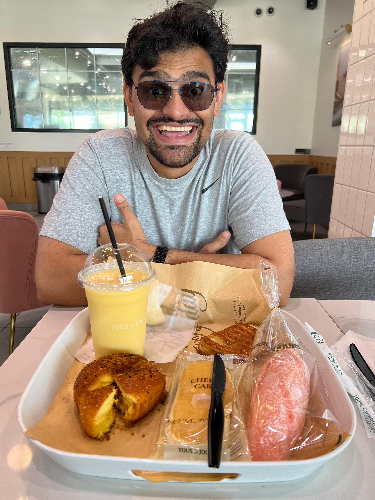

Introduction

As a creative problem-solver and hands-on innovator, I’ve spent the last few years pushing the boundaries of what’s possible at the intersection of data science, machine learning, and 3D printing. My journey has been marked by a relentless curiosity and a passion for bringing complex ideas to life, whether through advanced data visualization tools or intricate 3D-printed designs.
In my role as a Digital Agriculture Graduate Research Assistant at Iowa State University, I've honed my skills in machine vision and machine learning, developing solutions that have not only increased data precision but also improved field accuracy. My work on enhancing image-based predictions and streamlining data visualization tools has made a tangible impact, showcasing my ability to translate cutting-edge research into practical applications.
But my expertise isn’t confined to the digital realm. With a deep interest in 3D printing, I’ve explored how this technology can be used to prototype and create physical manifestations of complex data models. This hands-on approach allows me to bridge the gap between abstract algorithms and tangible objects, turning theoretical concepts into something you can hold and interact with.
My time as a Data Science and Engineering Intern at 3M further expanded my skill set, where I developed the 'Wanda Vision Platform' for real-time sensor data visualization and contributed to a U-Net-based data pipeline for enhancing wound imagery modeling accuracy. This blend of digital and physical creation is where I thrive, constantly tinkering and refining until the perfect solution emerges.
Whether it's improving data precision with advanced machine learning techniques or experimenting with new 3D printing materials and methods, I’m always on the lookout for the next challenge. My work is driven by a love for tinkering, an eye for detail, and a deep-seated belief that there’s always a better way to build, create, and innovate.
3D Printer

The Bambu Lab P1S is a cutting-edge 3D printer designed for precision and reliability, making it an ideal choice for printing highly accurate models and intricate details. With its advanced features, including a high-resolution nozzle and precise layer alignment, the P1S excels at producing detailed prints that capture every nuance of your designs.
3D Printer in Action
When it comes to printing accurate pictures, the Bambu Lab P1S shines through its ability to translate digital images into finely detailed 3D prints. By converting your images into 3D models, the P1S can recreate textures, gradients, and even complex shading with remarkable fidelity. Its robust software allows for fine-tuning of print settings, ensuring that every layer is laid down with meticulous care, resulting in crisp, clear reproductions.
Whether you’re looking to create photorealistic models, detailed miniatures, or any other intricate designs, the Bambu Lab P1S provides the precision and quality needed to bring your visions to life. With this printer, you can achieve stunningly accurate 3D prints that truly stand out.
About

Welcome to my creative space, where data science meets the art of 3D printing. My name is Jiztom Kavalakkatt Francis, and I’m a passionate innovator with a deep-rooted curiosity for turning complex concepts into tangible solutions. With over four years of experience in machine learning, computer vision, and data science, I’ve honed my skills in both the digital and physical realms.
My journey began in the world of academia, where I currently serve as a Digital Agriculture Graduate Research Assistant at Iowa State University. Here, I’ve been at the forefront of developing advanced machine learning algorithms that have significantly enhanced data precision and field accuracy. From refining image-based predictions to streamlining data visualization tools with cutting-edge technologies like AWS and Python, my work has made a meaningful impact on both research and real-world applications.
But my passion doesn’t stop at data. I’ve always been intrigued by the possibilities of 3D printing—a technology that allows me to bring my digital innovations into the physical world. Whether it's prototyping a new design or experimenting with novel materials, 3D printing is where I bring ideas to life in the most literal sense.
My professional experience also includes an enriching stint as a Data Science and Engineering Intern at 3M, where I contributed to the development of the 'Wanda Vision Platform' for real-time sensor data visualization and helped enhance the accuracy of wound imagery modeling using advanced data pipelines. This blend of creative problem-solving and hands-on tinkering is what defines my approach to innovation.
I believe that the intersection of data science and 3D printing offers endless possibilities for innovation. Whether it’s improving the precision of machine learning models or crafting a new prototype, I’m always exploring new ways to push the boundaries of what’s possible. This space is where I share my journey, my projects, and my passion for making ideas come to life.
Thank you for stopping by. I’m excited to connect, collaborate, and continue this journey of discovery and creation.
Contact